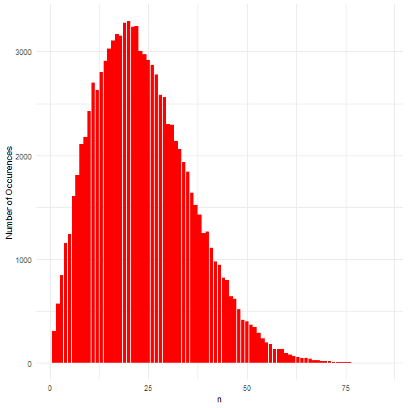
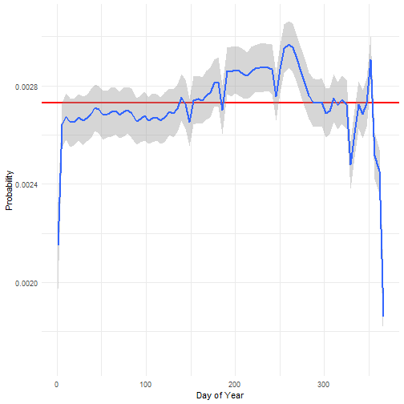
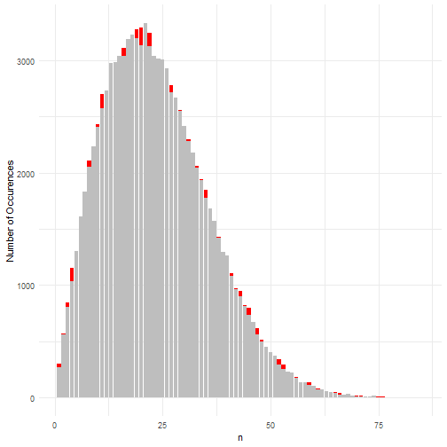

Random Variables
Adam J Sullivan
Assistant Professor of Biostatistics
Brown University
Random Variables
Random Variables Simulation
- We have discussed the importance of simulations throughout the past few lectures.
- They help us to:
- Understand complex mathematical problems.
- Adapt real life situations in which we may not understand the exact probabilitiy formulas.
- Consider further variation and understand what may lead to a change in outcome.
Binomial Simulation
- I want to use an example from a statistics textbook.
- Disclaimer the example they use is not actually the basis of the case but none the less is interesting.
- We will consider a 1978 Supreme Court Case
- Ballew v. Georgia
- 435 U.S. 223, 236-237 (1978)
Ballew v. Georgia (1978)
- The author stated that this case was about Ballew feeling his rights had been violated by having a 12 member jury of all white jurors.
- I don't present problems without reading them myself, and found that the Ballew Case was actually about the size of the jury being 5 was a violation of his constitutional rights.
- Reason for me stating this: Do not just trust a textbook.
Racial Discrimination in Jury Selection
- Even though this was not the supreme court case I wanted to model, let's consider the problem at hand.
- The author of the textbook states the following pieces of the problem:
- A jury of 12 members was all white.
- The proportion of the community the jury was selected from was 90% white.
With a Binomial
- We can do this fairly simply if we consider a success being that a non-white juror is selected, we can assume 10% probability for a success.
- Then we have the case in which out of 12, we had 0 success.
- This means by the binomial we have: \[0.9^{12}= 0.2824295\]
- This suggests just shy of a 30% chance of not having a non-white person on a jury.
With R
- Let's simulate these trials
set.seed(100)
t <- 100
p <- 0.10
n <- 12
juries <- rbinom(n=t, size=n, prob=p)
tab <- table(juries)
prop.table(tab)
## juries
## 0 1 2 3 4
## 0.24 0.42 0.24 0.08 0.02
- We see something very close to the actual probability of 28%.
What if we change the parameters
- Ballew only had 5 jurors in his case
set.seed(100)
t <- 100
p <- 0.10
n <- 5
juries <- rbinom(n=t, size=n, prob=p)
tab <- table(juries)
prop.table(tab)
## juries
## 0 1 2
## 0.58 0.35 0.07
Court Decision
- Ballew should have had at least 6
set.seed(100)
t <- 100
p <- 0.10
n <- 6
juries <- rbinom(n=t, size=n, prob=p)
tab <- table(juries)
prop.table(tab)
## juries
## 0 1 2 3
## 0.51 0.39 0.09 0.01
Conclusions
- There would have been no evidence of a biased jury with 12 all white members.
- Do you believe that?
Important Considerations
- If the pool of jurors is 90% white, then the decision of no bias would be correct.
- This is an important fact.
- When you want to attack biases, you need to attack the source of the problem.
- The source is the jury pool, not the particular jury that was selected.
Making a Function
- We keep repeating this experiment over and over by copying and pasting in values.
- We can make a function in R that represents a binomial problem.
binom.sim <- function(t, n, p) {
juries <- rbinom(n=t, size=n, prob=p)
tab <- table(juries)
return(prop.table(tab))
}
Further Explorations
- Now we can explore by changing proportions of jury pool.
- The lab will play with this function and consider what proportions might make for a more fair jury.
Birthday Problem
- The birthday problem is common in statistics.
- The goal how many people do we need to poll before we find common birthdays
- How do we do this?
- Ask a person their birthday
- Check if we have that birthday
- If not add it to our list and ask another.
- Stop when we have 2 in common
Uniform Distribution
- This is going to be a uniform distribution simulation.
- We will assume that each birthday has a \(1/366=0.00273224\) chance of happening.
- We will then build the simulation with this concept.
Birthday Function
bday <- function(){
total_samp <- NULL
for (i in 1:100) {
samp <- sample(1:366, size=1)
if (samp %in% total_samp) {
break
} else
{
total_samp[i] = samp
}
}
return(length(total_samp))
}
Simulate
T <- 100000
n <- replicate(T, bday())
Plot Shape
library(ggplot2)
ggplot(data=NULL, aes(x=n)) +
geom_bar(fill="red") +
theme_minimal() +
ylab("Number of Occurences")
Plot Shape

Plot Probabilities
ggplot(data=NULL, aes(x=n)) +
geom_bar(aes(y=..count../sum(..count..)), fill="red") +
theme_minimal() +
ylab("Probability of Occurences")
Plot Probabilities
Actual Probabilities of Birthdays
- We have a dataset that is contained in the code for the notes.
- It contains a count of all the births in the US on each day of the year from 1994 to 2014.
- We will first explore the probability of this.

What do we see?
- Multiple days of the year there are less births.
- New Years
- Valentines Day
- Christmas
Modify Birthday Function
bday_real <- function(){
total_samp <- NULL
for (i in 1:100) {
samp <- sample(1:366, size=1, prob=days$prop)
if (samp %in% total_samp) {
break
} else
{
total_samp[i] = samp
}
}
return(length(total_samp))
}
Simulate
T <- 100000
n2 <- replicate(T, bday_real())
Plot Shape

Plot Both Together

What do we see?
- Turns out there is very little difference between the real and uniform probability.
- Properties of real:
- Expecation (mean): 23.62066 days
- Variance: 148.0134413
- Properties of Uniform:
- Expecation (mean): 23.65677 days
- Variance: 150.3335665